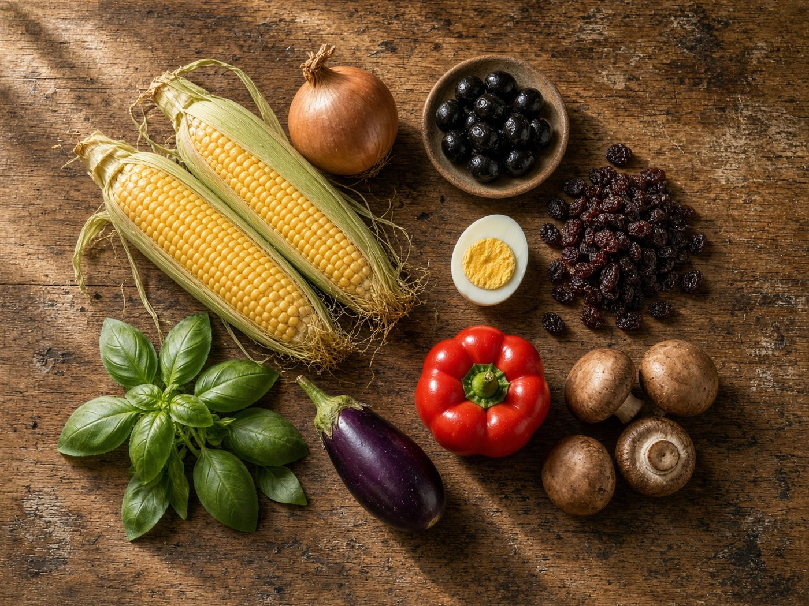

Início / Quem somos
Quem somos
Uma marca que nasce do barro de Pomaire e do milho dourado do verão chileno.

O nome que une a greda e o dourado
Greda Dourada une a greda de Pomaire, a argila onde o prato é assado, com o dourado da cobertura de choclo.
- Do que é feito
- Recheio de carne com cebola, ovo cozido e azeitonas, coberto com massa de choclo moído e manjericão, e assado até dourar.
- De onde vem
- Prato da cozinha camponesa chilena. Une o choclo dos povos originários com o recheio de herança espanhola, preparado no verão, temporada do choclo.
- Personalidade
- Calorosa, próxima, cuidadosa e orgulhosa de suas raízes.
Missão
Aproximar a tradição do pastel de choclo chileno dos lares por meio de três variedades refrigeradas, com apresentação cuidada e uma gestão que valorize os ingredientes, os ofícios locais e o uso responsável dos recursos.
Visão
Ser uma marca reconhecida por compartilhar a identidade gastronômica de Pomaire e mostrar que uma preparação tradicional pode se adaptar a diferentes preferências e ocasiões de consumo sem perder sua essência.
Nossos valores
O que cada valor significa no dia a dia do projeto.
Identidade cultural
Comunicar a cozinha chilena e reconhecer o ofício do oleiro. Está no nome, no logo e na paila.
Qualidade
Padronizar receitas, porções e apresentação, para que cada pedido seja igual ao anterior.
Diversidade
Oferecer alternativas de recheio para diferentes preferências, inclusive a opção vegetariana.
Responsabilidade
Considerar os efeitos sociais, ambientais e econômicos, do campo à embalagem retornável.
Transparência
Distinguir ingredientes, preços e compromissos verificáveis, sem prometer o que não foi validado.
Colaboração
Construir o projeto junto com a equipe do Brasil.
Nosso logo
A paila de barro de Pomaire, o choclo e a folha de manjericão: os materiais do produto reunidos em um só símbolo.
Tipografia: uma serifada calorosa para títulos (Fraunces) e uma sem serifa legível para preços e informações (Montserrat).